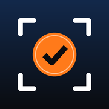

ProofStampProofStamp Support
ProofStamp puts the date, time and location on your photos and videos, and keeps proof that they haven't been changed.
Common questions
The stamp says "Locating…" or shows no address
ProofStamp needs location access: Settings → ProofStamp → Location → While Using the App, with Precise Location on. Indoors, GPS can take a few seconds longer. Street addresses also need an internet connection; GPS coordinates don't.
Photos aren't appearing in my Photos app
Allow ProofStamp to add photos: Settings → ProofStamp → Photos → Add Photos Only (or Full Access). Saving into a named album needs Full Access; with Add Photos Only, photos go to Recents. Every photo is also kept inside ProofStamp.
How do I change the date format, color or position of the stamp?
Tap Stamp style on the camera screen. The preview at the top shows exactly how the stamp will look as you change it. Tap the preview to move the stamp.
How do I prove a photo hasn't been edited?
Open Settings → Verify a photo and choose the file. ProofStamp compares its digital fingerprint with the one recorded when the photo was taken. Verification works on the device that took the photo. You can also type the code printed on the stamp.
What is a certified timestamp?
An independent timestamp authority signs each photo's fingerprint with its own trusted clock, using the RFC 3161 standard. This proves the photo existed at that time, even if the phone's clock was wrong. Only the fingerprint is sent, never the photo. Photos taken offline are certified when you're back online.
How can someone else check a certified timestamp?
Open the photo in ProofStamp, tap Share and send both the photo and its timestamp certificate (.tsr). Anyone can then check them with OpenSSL, without ProofStamp:
openssl ts -verify -in photo.tsr -data photo.jpg -CAfile cacert.pem
For Sectigo certificates, cacert.pem is your computer's standard trusted-certificate bundle (for example /etc/ssl/cert.pem on a Mac). For FreeTSA certificates, download cacert.pem and tsa.crt from FreeTSA and add -untrusted tsa.crt.
The check succeeds only with the exact original file. Messaging apps often re-compress photos; send them by AirDrop, email (as an attachment) or Files instead.
How do I share a photo without my location?
Open the photo, tap Share → Share without location data. This removes the GPS position from the file's hidden data. Anything printed on the stamp stays visible, so turn off the address and coordinates in Stamp Style if you don't want them shown. To always remove it, turn on Settings → Remove GPS data from files.
My video says "Video not stamped yet"
Keep ProofStamp open while a video is being stamped. iOS pauses this work when you switch apps or lock the screen. Tap Try again; the recording is kept until it succeeds.
How do I make a PDF report?
Open a project (or All Photos) and tap Create PDF report. Add your company name and choose 1, 2 or 4 photos per page, then share it by Mail, Messages, AirDrop or Files.
Will I lose my photos if I get a new iPhone?
ProofStamp's photos and records are included in iCloud and computer backups of your device, and move to a new iPhone when you restore from that backup. Deleting the app deletes them, except copies saved to your Photos library.
Does ProofStamp collect my data?
No. There are no accounts, ads or analytics, and your photos and locations stay on your device. See the Privacy Policy.